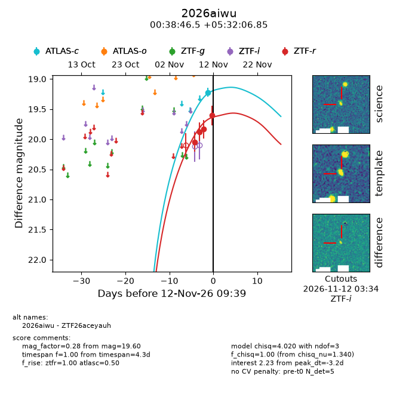
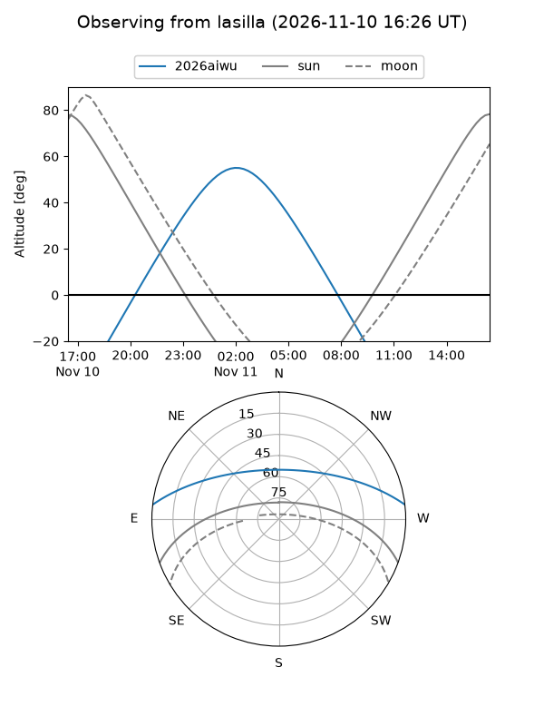
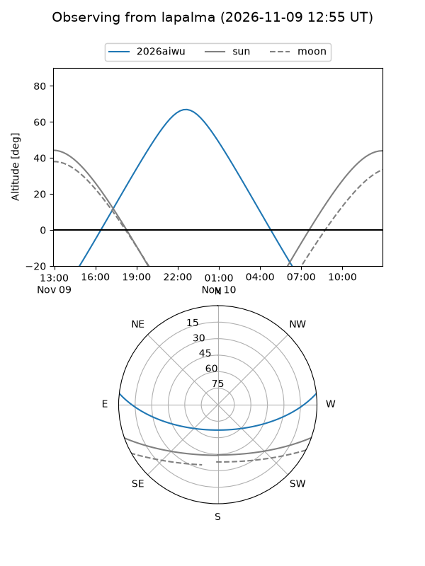
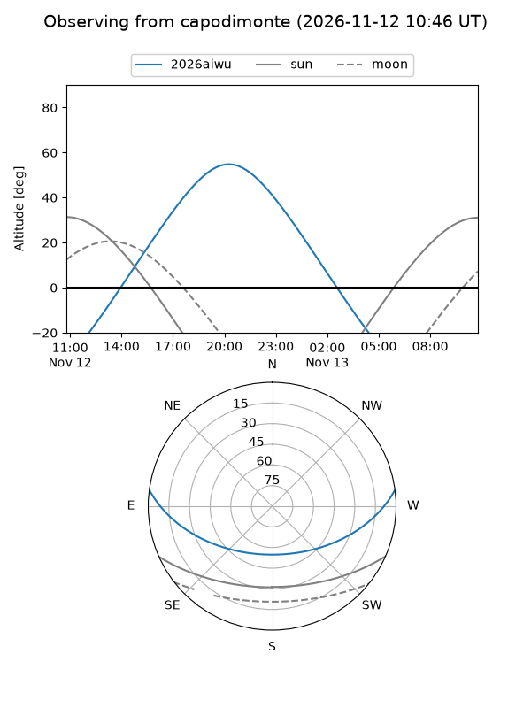
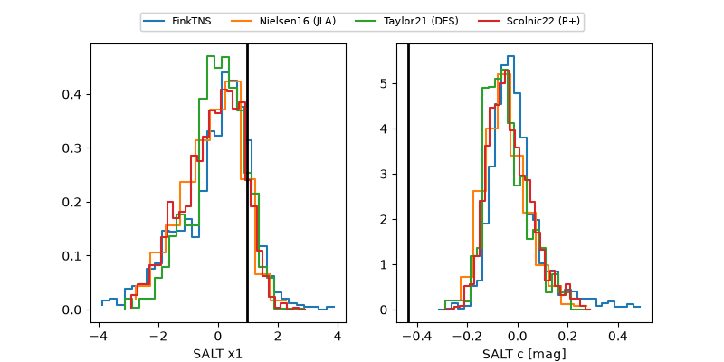

2026aiwu
Target 2026aiwu at 2026-11-12 09:45
Aliases and brokers:
FINK-ZTF: ztf.fink-portal.org/ZTF26aceyauh
Lasair-ZTF: lasair-ztf.lsst.ac.uk/objects/ZTF26aceyauh
ALeRCE-ZTF: alerce.online/object/ZTF26aceyauh
YSE-PZ: ziggy.ucolick.org/yse/transient_detail/2026aiwu
TNS name: wis-tns.org/object/2026aiwu
Direct TNS query: direct search
alt names
ZTF26aceyauh (ztf,fink_ztf)
2026aiwu (tns,yse)
Coordinates:
equatorial (ra, dec) = 9.6938,+5.53524
equatorial (HMS+DMS) = 00:38:46.51,+05:32:06.85
galactic (l, b) = (117.1093,-57.19329)
Flags:
peak dt: -3.2
Photometry:
last atlasc=19.22, ztfr=19.60
1 atlasc, 4 ztfr detections
Lightcurve

Visibility



Additional plots
